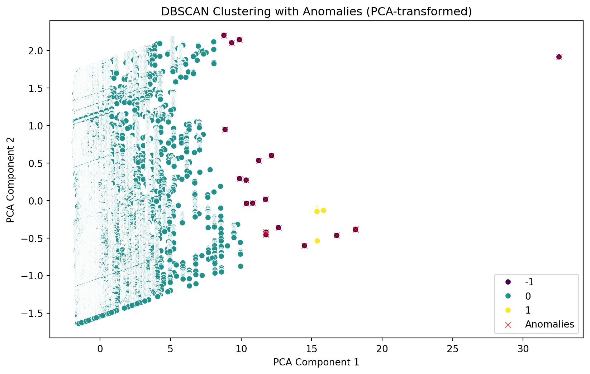

<bound method NDFrame.head of Commodity Date Unit Minimum Maximum Average
SN
0 Tomato Big(Nepali) 2013-06-16 Kg 35.0 40.0 37.5
1 Tomato Small(Local) 2013-06-16 Kg 26.0 32.0 29.0
2 Potato Red 2013-06-16 Kg 20.0 21.0 20.5
3 Potato White 2013-06-16 Kg 15.0 16.0 15.5
4 Onion Dry (Indian) 2013-06-16 Kg 28.0 30.0 29.0
... ... ... ... ... ... ...
197156 Garlic Dry Nepali 2021-05-13 Kg 100.0 120.0 110.0
197157 Fish Fresh(Rahu) 2021-05-13 KG 270.0 280.0 275.0
197158 Fish Fresh(Bachuwa) 2021-05-13 KG 225.0 235.0 230.0
197159 Fish Fresh(Chhadi) 2021-05-13 KG 220.0 230.0 225.0
197160 Fish Fresh(Mungari) 2021-05-13 KG 240.0 250.0 245.0
[197161 rows x 6 columns]>Importing the required libraries:
importing the dataset:
Only selecting the data January 1st 2020 onward which we are interested in:
| Commodity | Date | Unit | Minimum | Maximum | Average | |
|---|---|---|---|---|---|---|
| SN | ||||||
| 157524 | Tomato Big(Nepali) | 2020-01-02 | Kg | 65.0 | 70.0 | 67.5 |
| 157525 | Tomato Big(Indian) | 2020-01-02 | Kg | 65.0 | 70.0 | 67.5 |
| 157526 | Tomato Small(Local) | 2020-01-02 | Kg | 40.0 | 50.0 | 45.0 |
| 157527 | Tomato Small(Tunnel) | 2020-01-02 | Kg | 40.0 | 50.0 | 45.0 |
| 157528 | Tomato Small(Indian) | 2020-01-02 | KG | 40.0 | 50.0 | 45.0 |
| ... | ... | ... | ... | ... | ... | ... |
| 197156 | Garlic Dry Nepali | 2021-05-13 | Kg | 100.0 | 120.0 | 110.0 |
| 197157 | Fish Fresh(Rahu) | 2021-05-13 | KG | 270.0 | 280.0 | 275.0 |
| 197158 | Fish Fresh(Bachuwa) | 2021-05-13 | KG | 225.0 | 235.0 | 230.0 |
| 197159 | Fish Fresh(Chhadi) | 2021-05-13 | KG | 220.0 | 230.0 | 225.0 |
| 197160 | Fish Fresh(Mungari) | 2021-05-13 | KG | 240.0 | 250.0 | 245.0 |
39637 rows × 6 columns
Saving the commodity and date columns in its original form so that it can be used later as we will be converting them using label encoder.
<matplotlib.collections.PathCollection at 0x154e600d2d0>Identifying the missing values:
Commodity 0.0
Date 0.0
Unit 0.0
Minimum 0.0
Maximum 0.0
Average 0.0
dtype: float64Describing the data to know the details of our features:
| Date | Minimum | Maximum | Average | |
|---|---|---|---|---|
| count | 39637 | 39637.000000 | 39637.000000 | 39637.000000 |
| mean | 2020-09-27 03:02:53.020158208 | 100.141787 | 110.051518 | 105.096652 |
| min | 2020-01-02 00:00:00 | 6.000000 | 8.000000 | 7.000000 |
| 25% | 2020-05-25 00:00:00 | 40.000000 | 50.000000 | 45.000000 |
| 50% | 2020-10-19 00:00:00 | 70.000000 | 80.000000 | 75.000000 |
| 75% | 2021-02-02 00:00:00 | 120.000000 | 130.000000 | 125.000000 |
| max | 2021-05-13 00:00:00 | 1800.000000 | 2000.000000 | 1900.000000 |
| std | NaN | 92.813213 | 97.867785 | 95.277303 |
C:\Users\poude\AppData\Local\Temp\ipykernel_20340\1442402836.py:1: UserWarning:
`distplot` is a deprecated function and will be removed in seaborn v0.14.0.
Please adapt your code to use either `displot` (a figure-level function with
similar flexibility) or `histplot` (an axes-level function for histograms).
For a guide to updating your code to use the new functions, please see
https://gist.github.com/mwaskom/de44147ed2974457ad6372750bbe5751
sns.distplot(data["Average"])<Axes: xlabel='Average', ylabel='Density'>From this we can see that the data is right skewed.
To perform the anomaly detection we can use different models. Here, we will discuss some of the models but eventually we will be using DBSCAN.
First, we test the z_score to find anomaly.
Commodity Date Unit Minimum Maximum Average
SN
157571 Mushroom(Button) 2020-01-02 KG 330.0 340.0 335.0
157598 Chilli Dry 2020-01-02 Kg 390.0 400.0 395.0
157657 Mushroom(Button) 2020-01-03 KG 340.0 350.0 345.0
157684 Chilli Dry 2020-01-03 Kg 390.0 400.0 395.0
157742 Mushroom(Button) 2020-01-04 KG 320.0 330.0 325.0
... ... ... ... ... ... ...
197054 Strawberry 2021-05-12 Kg 400.0 500.0 450.0
197056 Chilli Dry 2021-05-12 Kg 320.0 330.0 325.0
197114 Asparagus 2021-05-13 Kg 1000.0 1050.0 1025.0
197145 Strawberry 2021-05-13 Kg 450.0 500.0 475.0
197147 Chilli Dry 2021-05-13 Kg 320.0 330.0 325.0
[2208 rows x 6 columns]Second, we use interquartile range(IQR) for anomaly detection.
Commodity Date Unit Minimum Maximum Average
SN
157571 Mushroom(Button) 2020-01-02 KG 330.0 340.0 335.0
157575 Celery 2020-01-02 Kg 270.0 280.0 275.0
157576 Parseley 2020-01-02 Kg 270.0 280.0 275.0
157578 Mint 2020-01-02 Kg 270.0 280.0 275.0
157583 Gundruk 2020-01-02 Kg 280.0 290.0 285.0
... ... ... ... ... ... ...
197130 Pomegranate 2021-05-13 Kg 280.0 300.0 290.0
197141 Pear(Chinese) 2021-05-13 Kg 250.0 260.0 255.0
197145 Strawberry 2021-05-13 Kg 450.0 500.0 475.0
197147 Chilli Dry 2021-05-13 Kg 320.0 330.0 325.0
197157 Fish Fresh(Rahu) 2021-05-13 KG 270.0 280.0 275.0
[4039 rows x 6 columns]Selecting the numerical features of which we want to detect anomalies:
array([1, 1, 1, ..., 1, 1, 1])And performing the element-wise comparison
(array([ 47, 74, 133, ..., 39590, 39621, 39623], dtype=int64),)Making our earlier scatter plot more beautiful:
<matplotlib.collections.PathCollection at 0x154ed258a90>
Converting our Date features to a numerical format and converting that timestamp into an integer:
C:\Users\poude\AppData\Local\Temp\ipykernel_20340\2041701408.py:1: SettingWithCopyWarning:
A value is trying to be set on a copy of a slice from a DataFrame.
Try using .loc[row_indexer,col_indexer] = value instead
See the caveats in the documentation: https://pandas.pydata.org/pandas-docs/stable/user_guide/indexing.html#returning-a-view-versus-a-copy
data["Date"] = pd.to_datetime(data["Date"]).apply(lambda x: x.timestamp())
C:\Users\poude\AppData\Local\Temp\ipykernel_20340\2041701408.py:3: SettingWithCopyWarning:
A value is trying to be set on a copy of a slice from a DataFrame.
Try using .loc[row_indexer,col_indexer] = value instead
See the caveats in the documentation: https://pandas.pydata.org/pandas-docs/stable/user_guide/indexing.html#returning-a-view-versus-a-copy
data["Date"] = data["Date"].astype(int)| Commodity | Date | Unit | Minimum | Maximum | Average | |
|---|---|---|---|---|---|---|
| SN | ||||||
| 157524 | Tomato Big(Nepali) | 1577923200 | Kg | 65.0 | 70.0 | 67.5 |
| 157525 | Tomato Big(Indian) | 1577923200 | Kg | 65.0 | 70.0 | 67.5 |
| 157526 | Tomato Small(Local) | 1577923200 | Kg | 40.0 | 50.0 | 45.0 |
| 157527 | Tomato Small(Tunnel) | 1577923200 | Kg | 40.0 | 50.0 | 45.0 |
| 157528 | Tomato Small(Indian) | 1577923200 | KG | 40.0 | 50.0 | 45.0 |
TO maintain the consistency, we choose to use standard scalar to scale our data:
Reducing the dimensions of our data to 2 using PCA:
array([[-0.79822404, 1.77395273],
[-0.79822404, 1.77395273],
[-1.20721222, 1.74699569],
...,
[ 2.36499445, -1.39243537],
[ 2.27428372, -1.39829777],
[ 2.63712665, -1.37484816]])Performing the DBSCAN clustering using PCA component 1 and 2 each representing one dimension.

To see the performance of our Clustering model, we use Silhouette Score:
Silhouette Score: 0.8130632448850409| x | y | cluster | Date | Commodity | |
|---|---|---|---|---|---|
| 0 | -0.798224 | 1.773953 | 0 | 2020-01-02 | Tomato Big(Nepali) |
| 1 | -0.798224 | 1.773953 | 0 | 2020-01-02 | Tomato Big(Indian) |
| 2 | -1.207212 | 1.746996 | 0 | 2020-01-02 | Tomato Small(Local) |
| 3 | -1.207212 | 1.746996 | 0 | 2020-01-02 | Tomato Small(Tunnel) |
| 4 | -1.207212 | 1.746996 | 0 | 2020-01-02 | Tomato Small(Indian) |
| ... | ... | ... | ... | ... | ... |
| 39632 | 0.186357 | -1.534286 | 0 | 2021-05-13 | Garlic Dry Nepali |
| 39633 | 3.181391 | -1.339674 | 0 | 2021-05-13 | Fish Fresh(Rahu) |
| 39634 | 2.364994 | -1.392435 | 0 | 2021-05-13 | Fish Fresh(Bachuwa) |
| 39635 | 2.274284 | -1.398298 | 0 | 2021-05-13 | Fish Fresh(Chhadi) |
| 39636 | 2.637127 | -1.374848 | 0 | 2021-05-13 | Fish Fresh(Mungari) |
39637 rows × 5 columns
It is difficult to visualize individual data with so much compact cluster. So, let’s try to do it the other way where we break our clusters and visualize only the one that is important to us.
Here, these are the anomaly that we wanted to see.
Let’s visualize it more clearly the other way:
We can see that the Vegetables like Asparagus and Mushroom, spice like Akbare Green Chilli, Fruits like Strawberry which are less consumed in Nepal and are usually more expensive than other vegetables see the anomalies in price. This is simply because people are usually unaware of their actual price as these foods are less consumed in Kathmandu and the whole sellers and retailers take an advantage of this and rise their price citing various reasons like weather, change in fuel price, etc. The suprising commodity that features in this list is Chinese Garlic, which is a popular and most sold spice in Kathmandu. The reason may be the sellers sometime increase the price by creating fake shortage of this product for more profit by saying there has been some problem during import as it is imported from China. This is not very uncommon thing there. So, the concerned authority should really need to pay attention to the sudden increase of the off seasonal and less consumed commodity in addition to the regular ones.